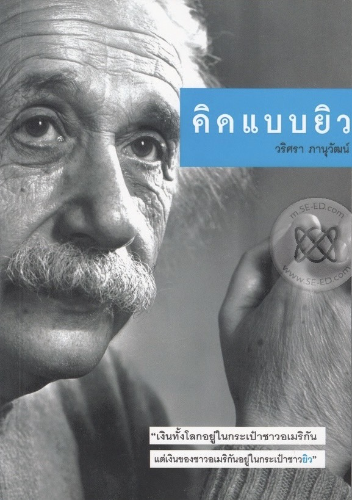

<html lang="en"></html>

<head>
	<meta charset="utf-8">
	<meta name="viewport" content="width=device-width, initial-scale=1">
	<title>แนะนำหนังสือ “คิดแบบยิว (Jewish Thinking)”</title>
	<link href="https://cdn.jsdelivr.net/npm/bootstrap@5.3.0-alpha3/dist/css/bootstrap.min.css" rel="stylesheet" crossorigin="anonymous">

	<meta name="keywords" content="คิดแบบยิว,Jewish Thinking,แนวคิดชาวยิว ,ปรัชญาชาวยิว,ความสำเร็จของชาวยิว,การทำธุรกิจแบบยิว ,การศึกษาแบบยิว ">
	<meta name="description" content="คิดแบบยิว (Jewish Thinking) เป็นหนังสือที่นำเสนอแนวคิดและปรัชญาของชาวยิวที่มีอิทธิพลต่อการดำเนินชีวิตและการทำธุรกิจ หนังสือเล่มนี้จะพาผู้อ่านไปสำรวจวิธีการคิดและการตัดสินใจที่มีเอกลักษณ์เฉพาะตัวของชาวยิว">


	<link rel="preconnect" href="https://fonts.googleapis.com">
	<link rel="preconnect" href="https://fonts.gstatic.com" crossorigin>
	<link href="https://fonts.googleapis.com/css2?family=Itim&family=Noto+Serif+Thai:wght@100..900&family=Sarabun:ital,wght@0,100;0,200;0,300;0,400;0,500;0,600;0,700;0,800;1,100;1,200;1,300;1,400;1,500;1,600;1,700;1,800&display=swap" rel="stylesheet">

	<link rel="stylesheet" href="css/style.css">

</head>
<header>
	<!-- Header section -->
	<div class="row bg-body-tertiary sticky-top">
	<div class=" header">
		<div class="logo">
			REALLLFERN
			<small>ชนนิกาน</small>
		</div>
	</div>

	<!-- Navigation bar -->
	<section class="nav">
		<ul class="menu">
			<li><a href="#">Home</a></li>
			<li><a href="#">Books</a></li>
			<li><a href="#">Bazaar</a></li>
			<li><a href="#">Promotion</a></li>
			<li><a href="#">Story</a></li>
			<li><a href="#">About Us</a></li>
		</ul>
		<div class="icons">
			<a href="#">สมัครสมาชิก</a>
			<a href="#">เข้าสู่ระบบ</a>
			<a href="#">ติดต่อเรา</a>
			<a href="#"></a>
			<a href="#"></a>
			<a href="#"></a>
			<a href="#"></a>
			<a href="#"></a>

		</div>
		<div class="search-cart">
			<a href="#">&#128269;</a> <!-- Search icon -->
			<a href="#">&#128722;</a> <!-- Cart icon -->
		</div>
	</section>
</header>


<body>
	<div class="container"  style="background-color: #f5ebe0;">

<!-- รูปหนังสือที่แนะนำ -->
<div class="row my-4 mt-5">
    <div class="col-md-6 px-0" id="jewish">
        
    </div>

<!-- ข้อความแนะนำ -->
    <div class="col-md-6 px-0">
	 <br>
	 <br>
        <h2>
           <strong> คิดแบบยิว</strong>
        </h2>

		<h3>
			<strong>(Jewish thinking)</strong>
		</h3>

        <p class="fs-6">
            คิดแบบยิว หรือ Jewish Thinking เป็นหนังสือที่สำรวจแนวคิดและปรัชญาของชาวยิวที่มีอิทธิพลต่อการดำเนินชีวิตและการตัดสินใจในด้านต่างๆ 
			หนังสือเล่มนี้นำเสนอวิธีการคิดที่เป็นเอกลักษณ์ของชาวยิว ซึ่งมีบทบาทสำคัญในการสร้างสรรค์นวัตกรรมและความสำเร็จในหลายๆ ด้าน ไม่ว่าจะเป็นธุรกิจ การศึกษา หรือการพัฒนาตนเอง
		</p>
		<p class="fs-6">
			หนังสือเล่มนี้เหมาะสำหรับผู้ที่สนใจเรียนรู้วิธีการคิดและปรัชญาที่สามารถนำไปปรับใช้ในชีวิตประจำวัน เพื่อเพิ่มประสิทธิภาพและความสำเร็จในด้านต่างๆ
		</p>
		<br>
<!-- บรรยายหนังสือ -->
        <h4>
            <strong>เรื่องย่อ</strong>
        </h4>
        <p class="fs-6">
            มีคำกล่าวของคนทั้งโลกถึงชาวยิวว่า คำกล่าวนี้ไม่เกินความจริงเลยหนังสือ “คิดแบบยิว” จะเป็นคำเฉลยที่ทำให้ท่านได้รับคำตอบว่า ทำไมคนทั้งโลกคิดแบบนี้ จะเป็นคำเฉลยที่ทำให้ท่านได้รับคำตอบว่า ทำไมคนทั้งโลกคิดแบบนี้ บุคคลที่มีชื่อเสียงพร้อมกับประสบความสำเร็จส่วนใหญ่จะเป็นชาวยิว อาทิ สตีเวน สปีลเบิร์ก, ดัสติน ฮอฟแมน, พอล นิวแมน, เคิร์ก ดักลาส, บรูซ วิลลิส,    ริชาร์ด เกียร์ หรือแม้กระทั่งนักวิทยาศาสตร์รางวัลโนเบล สาขาฟิสิกส์ ในปีค.ศ. 1921 ชื่อ แอลเบิร์ท ไอน์สไตน์ ถ้าจะมีใครพูดถึงชาวยิว ขอให้มองพวกเขาให้ครบทุกมุม เป็นธรรมดาที่คนเราจะมีทั้งด้านดี และไม่ดี ส่วนหนังสือเล่มนี้อาจจะไม่ใช่คำตอบสุดท้ายที่มีต่อคนยิวทั้งโลก แต่อาจเป็นจุดเริ่มต้นที่ทำให้นักอ่านได้ศึกษาแนวความคิดและประวัติของคนยิวเพิ่มเติมในหลายๆ มุมที่ยังไม่มีใครรับรู้มาก่อน
        </p>

		<p class="fs-4"> <strong>คะแนนหนังสือ 9.0 </strong></p>
		<table class="fs-6" >
			<tr>
				<td>ผู้แต่ง</td>
				<td>วริศรา ภานุวัฒน์</td>
			</tr>

			<tr>
				<td>หมวดหมู่</td>
				<td>ประวัติศาสตร์</td>
			</tr>
	
			<tr>
				<td>ISBN</td>
				<td> 9786165089463 </td>
			</tr>
	
			<tr>
				<td>จำนวนหน้า</td>
				<td>224 หน้า</td>
			</tr>
		</table>
	</div>
	</div>


</div>
  </body>
    <script src="https://cdn.jsdelivr.net/npm/bootstrap@5.3.3/dist/js/bootstrap.bundle.min.js" integrity="sha384-YvpcrYf0tY3lHB60NNkmXc5s9fDVZLESaAA55NDzOxhy9GkcIdslK1eN7N6jIeHz" crossorigin="anonymous"></script>
  </body>
</html>